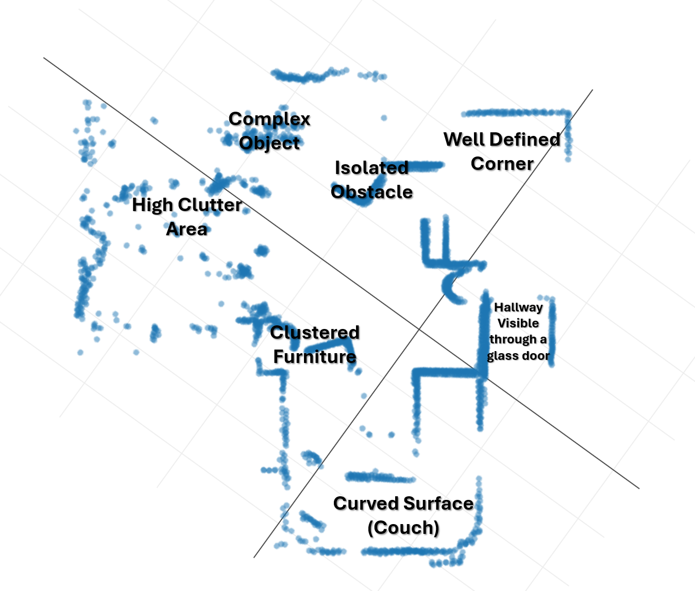

Aura - Autonome LiDAR Robot - 09-2024 t/m 02-2025
Aura was een proof-of-concept voor een autonome beveiligingsrobot in een magazijnomgeving. Binnen dit project was mijn hoofdrol het bouwen van een eigen GraphSLAM-oplossing in C++, zodat de robot een onbekende omgeving kon mappen met LiDAR en odometrie.
Mijn rol: Verantwoordelijk voor C++ en SLAM
Een hero shot van de AURA robot, gemaakt voor de promotievideo van het project.
Context
Ons team wou een autonome patrouillerende robot bouwen die kon navigeren in een magazijnomgeving en daarnaast klimaat- en luchtkwaliteitsdata kon verzamelen. De robot was gebaseerd op een Kobuki Rover met een LiDAR en draaide op een Raspberry Pi.
Voor de productvisie maakte ik ook het storyboard, schreef ik het script en produceerde ik de promotievideo, niet vereist voor school, maar omdat het leuk was. Maar de kern van mijn technische bijdrage zat in het autonomieprobleem: hoe weet een robot waar hij is in een omgeving die hij nog niet kent?
Het probleem
Het normale pad voor dit soort robotica is vaak ROS met bestaande SLAM-packages. Onze Kobuki Rover had echter drivers die niet goed compatibel waren met de standaard ROS-oplossingen. Daardoor kon ik niet simpelweg een bestaande stack configureren.
Ik moest zelf een SLAM-systeem bouwen dat LiDAR-scans en odometrie combineerde, live op een Raspberry Pi draaide en bruikbare kaarten kon genereren voor latere navigatie.
Wat ik bouwde
Ik implementeerde een GraphSLAM-systeem in C++. De robot verzamelde LiDAR-scans, gebruikte wielodometrie als initiële bewegingsschatting en matchte opeenvolgende scans met GICP (Generalized Iterative Closest Point) via PCL.
Wanneer de robot meer dan 15 cm had gereden, werd een nieuwe keyframe toegevoegd aan een graph. Bij een mogelijke loop closure werd Ceres Solver gebruikt om de graph te optimaliseren en opgebouwde drift terug te trekken naar een consistentere kaart.
De gegenereerde kaart werd later door een teamgenoot gebruikt als basis voor pathfinding, waardoor de robot autonoom naar een doel in een klaslokaal kon navigeren.
Belangrijke technische inzichten
SLAM was het project
Voor Aura is de SLAM-implementatie wel echt mijn toevoeging aan het project. Het was de technische kern van het project. Zonder kaartopbouw was er geen praktische autonomie, geen bruikbare pathfinding en geen geloofwaardige beveiligingsrobot. In dit document is meer te lezen over hoe het precies in elkaar zat.
De initiële schatting maakte het verschil
ICP-achtige algoritmes kunnen vastlopen in lokale minima. In mijn eerste pogingen ontstonden kaartvervormingen en rotatiefouten omdat de scanmatching te weinig context had.
De doorbraak was het gebruiken van odometrie als initiële schatting voor GICP. Door de wieldata mee te geven aan de scanmatcher begon het algoritme dichter bij de juiste oplossing. Dat verbeterde de uitlijning genoeg om de eerste duidelijke kaart te genereren.
Realtime draaien op embedded Linux
De SLAM-stack moest niet alleen theoretisch werken, maar live draaien op een Raspberry Pi. Daarom gebruikte ik downsampling, keyframes en graph-optimalisatie om de hoeveelheid data beheersbaar te houden.
Resultaat
De robot kon een ruwe maar bruikbare pointcloudkaart maken van een realistische, rommelige omgeving. De kaart herkende duidelijke hoeken, meubelpoten en zelfs een gang zichtbaar door een glazen deur.

Dit was geen perfect SLAM-systeem. Vooral rotaties en driftcorrectie bleven lastig. Maar het systeem bewees wel dat mijn C++-implementatie LiDAR en odometrie kon combineren tot een kaart die bruikbaar was voor verdere navigatie.
Wat ik leerde
Aura leerde mij hoe snel robotica complex wordt wanneer algoritmes, sensoren, timing en hardwaredrivers samenkomen. Ik leerde ook dat een "from scratch" oplossing veel meer vraagt dan alleen code schrijven: je moet begrijpen waarom een algoritme faalt, welke sensorinformatie je mist en welke aannames je systeem nodig heeft om stabiel te worden.
Daarnaast leerde ik hoe waardevol communicatie is in technische projecten. De promotievideo hielp om de productvisie begrijpelijk te maken, terwijl de technische documentatie liet zien hoe de SLAM-oplossing werkte.
Technische proof
- GraphSLAM Module Deep Dive - technische uitleg van de implementatie, code, GICP, keyframes en beperkingen.
- Promotievideo - productvisie en demonstratie van het concept.
Gebruikte technologieën
C++ CMake SLAM LiDAR GICP Ceres Solver PCL Eigen Linux Raspberry Pi